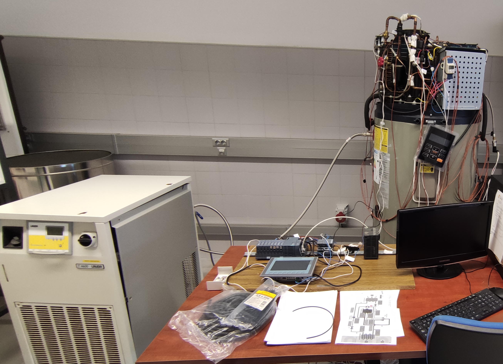
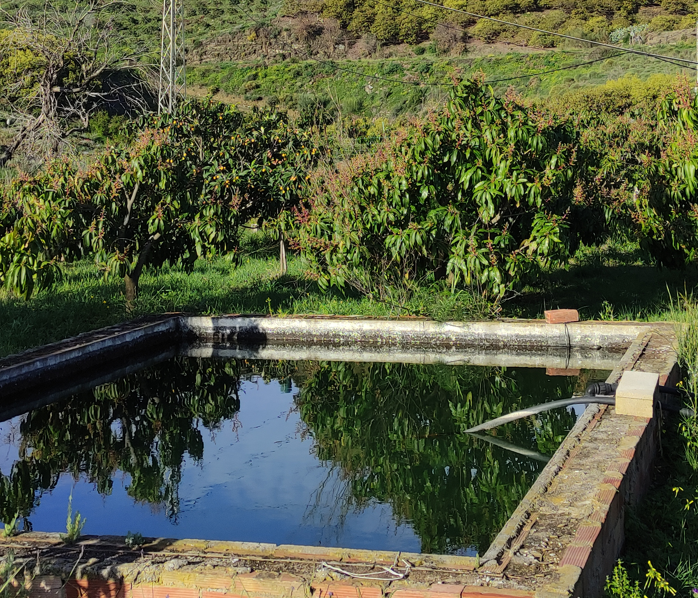

Ingeniero de la Energía

Monitorización y Adquisición de datos de Bomba de Calor
Mejora del sistema de adquisición de datos de una bomba de calor aerotérmica con PLC Siemens.

Riego Automático y Monitorización
Riego automatizado con monitorización en tiempo real mediante Grafana.
Poemario
Aplicación móvil de poesía.